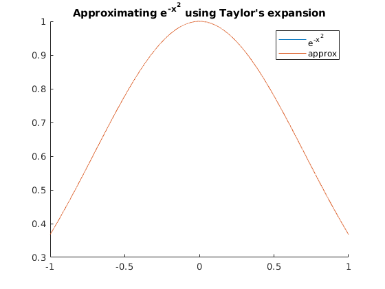

Zachary Kaplan
Math 340-006 Assignment 1 1/19/18
Contents
Part 1
% We first note that pi = 4\sum_{n=0}^\infty (-1)^n/(2n + 1). tolerance = 1e-9; approx_pi = 0; n = 0; % Number of terms used. % Using a while loop beause we don't know the number of terms we'll need. while abs(pi - approx_pi) > tolerance approx_pi = approx_pi + 4 * (-1)^n / (2*n + 1); n = n + 1; end fprintf(['Taylor Approximation:\n' ... ' Approx: %.8f\n' ... ' Real : %.8f\n' ... ' Error : %e\n' ... ' Terms : %d\n\n'], approx_pi, pi, abs(pi - approx_pi), n); % We then take the Ramanujan approximation: % 1/pi = 2sqrt(2)/99^2\sum_{n=0}^\infty (4n)!/(n!)^4 (23690n+1103)/396^{4n} tolerance = 1e-17; approx_1bypi = 0; n = 0; % Number of terms used. % Some precomputed values. coef = 2*sqrt(2)/99^2; % Second condition is just to avoid issues with NaN (1/0). while abs(pi - 1/approx_1bypi) > tolerance approx_1bypi = approx_1bypi + coef*factorial(4*n)/factorial(n)^4 * ... (26390*n + 1103)/396^(4*n); n = n + 1; end fprintf(['Ramanujan Approximation:\n' ... ' Approx: %.16f\n' ... ' Real : %.16f\n' ... ' Error : %e\n' ... ' Terms : %d\n\n'], ... 1/approx_1bypi, pi, abs(pi - 1/approx_1bypi), n);
Taylor Approximation: Approx: 3.14159265 Real : 3.14159265 Error : 9.999996e-10 Terms : 998280591 Ramanujan Approximation: Approx: 3.1415926535897931 Real : 3.1415926535897931 Error : 0.000000e+00 Terms : 3
Part 2
% We take the Taylor's approximation for e^{-x^2} about x = 0: % \sum_{n=0}^\infty (-1)^n x^(2n)/(n!). tolerance = 1e-12; x_step = 1e-4; X = -1:x_step:1; % The support of our approximation. max_nonzero_terms = 20; % Assume less than 20 nonzero terms. coeffs = zeros(1, 2*max_nonzero_terms); coeffs(2*max_nonzero_terms) = 1; % coeff of x^0 is 1. n = 1; % Number of nonzero terms. while norm(abs(exp(-X.^2) - polyval(coeffs, X)), inf) > tolerance % 2*. because every other term (odd) is 0. coeffs(2*(max_nonzero_terms - n)) = (-1)^n / factorial(n); n = n + 1; end fprintf(['Taylor Approximation of e^{-x^2}\n'... ' Max Error on [-1, 1]: %e\n' ... ' Nonzero Terms : %d\n\n'], ... norm(abs(exp(-X.^2) - polyval(coeffs, X)), inf), n); % Plot both the real and approximated functions. figure hold on plot(X, exp(-X.^2)); plot(X, polyval(coeffs, X)); title('Approximating e^{-x^2} using Taylor''s expansion'); legend('e^{-x^2}', 'approx')
Taylor Approximation of e^{-x^2}
Max Error on [-1, 1]: 7.196466e-13
Nonzero Terms : 15
 Extra Credit
times = 10 ^ 4; % Number of iterations. N = zeros(1, times); % Number of shifts per iteration. % Using parfor b/c each run is independent and if you've got a parallel % pool you might as well use it ;) parfor i = 1:times grid = zeros(101); grid(ceil(end/2), ceil(end/2)) = 1; while not(any(grid(:,1)) || any(grid(:,end)) || ... any(grid(1,:)) || any(grid(end,:))) % Technically this isn't perfect because the first interval has one % less floating point representation that can be returned from rand % than the rest, but this is mostly insignificant. r = rand; if r < 0.25 shift = [ 1 0 ]; % Down elseif r < 0.5 shift = [ -1 0 ]; % Up elseif r < 0.75 shift = [ 0 1 ]; % Right else shift = [ 0 -1 ]; % Left end grid = circshift(grid, shift); N(i) = N(i) + 1; end end fprintf(['Extra Credit Simulation:\n'... ' Average Number of Movements: %.4f\n'], mean(N));
Extra Credit Simulation: Average Number of Movements: 2947.9855